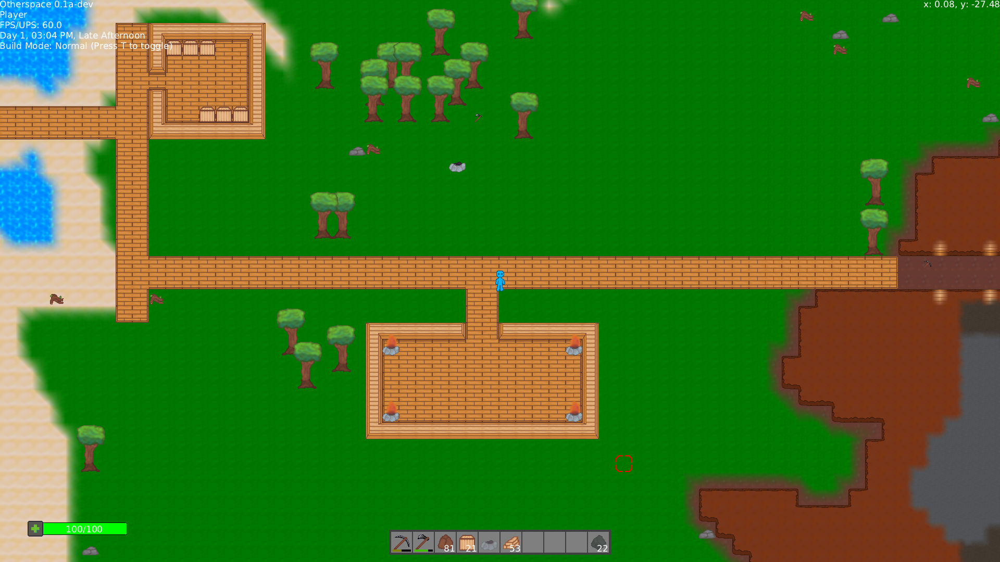
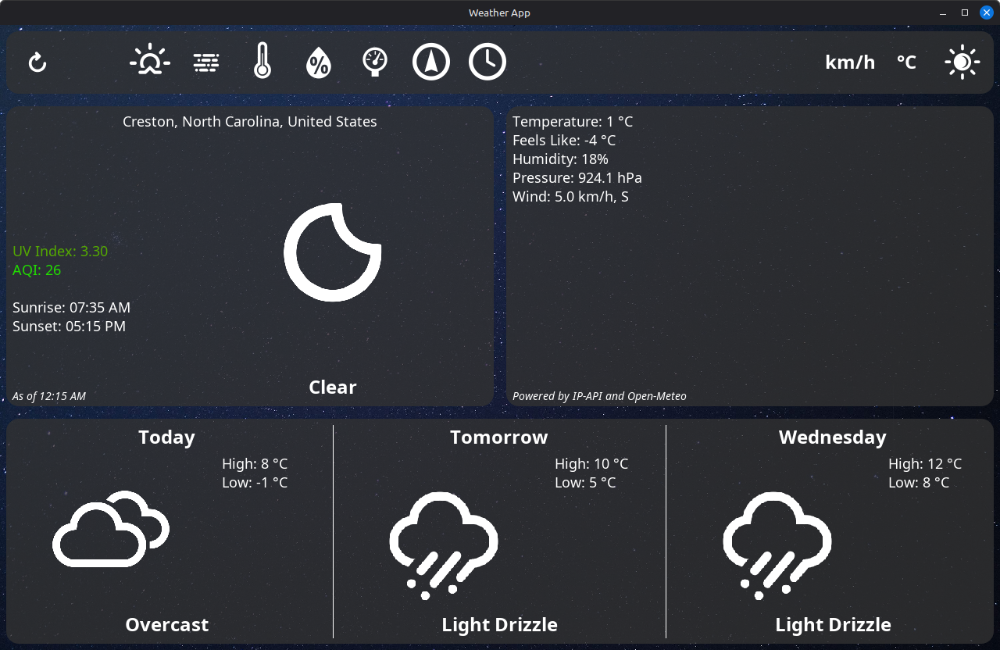

Projects
Otherspace
Time: September 2024 -
Skills Used: Java, OpenGL, Graphics Programming, UI Design, Project Development, Git
Link: https://github.com/jpdavis268/OtherspaceExhibition
Description: Otherspace is a game I have been working on in my own time for over a year now, and, in my opinion, is my most impressive project. It is a game built in a custom Java-based engine, using the LWJGL library to provide access to native graphics and audio APIs. I made the entire project from scratch on my own, including the graphics pipeline. The game itself is a 2D survival factory game, set in an infinite procedural sandbox environment. The game includes many technically impressive features, the implementation of which often forced me to learn advanced programming tricks long before they were covered in my classes. Working on this game provided a wealth of knowledge and experience that I would not have otherwise been able to gain through school alone, and taught me many valuable (and often hard) lessons about the importance of clean code and proper software design. The game itself is still early in development, but I have a lot of ideas and a solid base, and intend to keep developing it.
Full Stack Web Application
Time: October 2025 - November 2025
Skills Used: Java, Spring Boot, MySQL, JavaScript, Python, Git, Linux
Link: https://github.com/jpdavis268/FullStackWebApp
Description: During my database course, we were assigned a group project in the latter half of the semester, where we were asked to design and present an application for a MySQL database. Me and my teammates decided that for our presentation, we would build a website with a database backend that anyone could visit and use. The website would be a simulation of a grocery store checkout terminal, where users could enter items and store members and see how it affected the website in real time for everyone. This was far beyond what was asked of us, but we thought it would be a fun challenge and wanted to impress both our classmates and professor. Within the group, my responsibility was to write the website backend and SQL schema, while another teammate worked on the site frontend and the other worked on the technical documentation and design of the database. At the start of this project, I knew next to nothing about web development. I learned about the Spring Framework during a seminar and how powerful of a tool it was, and decided I wanted to use it. After only a couple of days of fervorous research and testing, I was able to create a working web server application that could process HTTPS requests and access the database accordingly, even taking steps to protect the service against common security threats such as SQL injection. I then wrote a Python script that generated a large quantity of sample data for use in the demonstration. Once this was done, I wanted to help on the frontend, and was able to quickly pick up the fundamentals of JavaScript and React so I could implement some unfinished features. Finally, we hosted the webserver and site on a domain one of my teammates had, allowing our classmates to freely use the site during the presentation. Both I and my teammates were very proud of what we accomplished, and gained familiarity with many tools we had barely heard of before the project began.
Desktop Weather App
Time: October 2025 - November 2025
Skills Used: Java, Git, UI Design, Web APIs
Link: https://github.com/jpdavis268/DesktopWeatherApp
Description: In my software engineering class, our professor would ask us to make Java based GUI apps that took advantage of design patterns we had learned. For the subject-observer pattern, we were asked to build a weather app, where different GUI panels would "observe" a subject class that maintained a set of weather data. While the implied expectation was that this would be random values, I decided it would be neat if the app displayed real weather data taken from the user's local area. After some research, I discovered IP-API and Open-Meteo, APIs that provided location and weather data respectively. I found out how to use Java's standard library to send HTTPS requests, and made use of the GSON library to parse the data the app received from the APIs. For the GUI, I decided to forgo using the Swing library, instead using the skills I had learned from developing my game to build UI components from scratch using AWT's Graphics2D library. This allowed me to add features such as a dynamic background and animated UI elements, which made the app look sleek and professionally designed. I am very proud of what I was able to accomplish with this.
